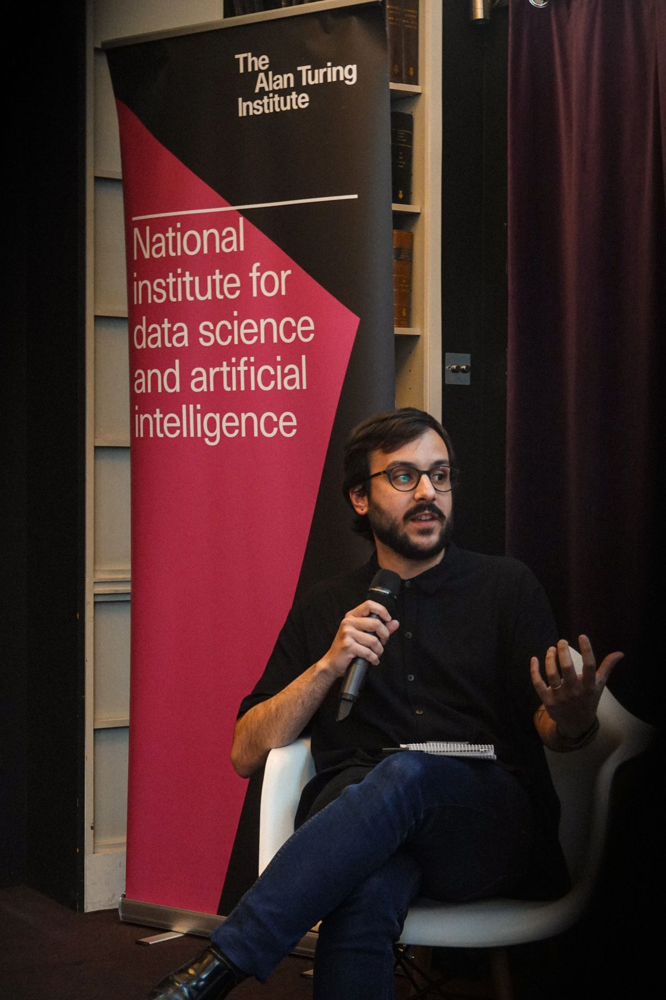

Speaking & public engagement
Experience in newsrooms and rigorous research
I speak, train, and advise on AI, journalism, and what that means for how we engage with information. I have reported on these systems, built with them inside newsrooms, and now research them at Cambridge.
I work with newsrooms, universities, conferences, and organisations navigating AI adoption, in English or Portuguese.
Formats
How I work
-
Keynotes & talks
Evidence-driven talks for conferences and organisations, tailored to the audience.
-
Panels & moderation
Panel contributions or chairing, in English or Portuguese.
-
Workshops & training
Hands-on work for newsrooms and universities, from short sessions to full-day programmes.
-
Advisory
Ongoing counsel for organisations working through AI adoption and information risk.
Past engagements
Selected venues & programmes

- How AI is shaping journalism and journalism is shaping AI
Panel on AI and journalism, alongside Umang Bhatt, Tomasz Hollanek, Jessica Cecil, and Parmy Olson.
- AI and Emotional Companionship
Chaired the roundtable on data intimacy and digital ethics, in a session where experts examined how AI is reshaping emotional experience and mental health care. Contributed as a journalist and AI ethics researcher, connecting the specialist debate to questions of privacy, ethics, and public understanding.
- Platforms, News, and Disinformation
Talk at the conference held by the Leverhulme Centre for the Future of Intelligence (University of Cambridge) in collaboration with the Jindal School of Journalism and Communication at O.P. Jindal Global University.
- Voz Delas: using AI to improve the gender diversity of sources
Panel on Voz Delas, Folha's Google News Initiative-backed AI system that classifies the gender of sources quoted in the paper and feeds a database of women experts, pushing coverage towards gender parity. With Camila Marques and Yuri Tavares; moderated by Vitória Régia da Silva (Gênero e Número). Original title: 'Voz Delas: como usamos IA para ajudar na diversidade de gênero das fontes'.
- Generative AI and journalism: creating content on the Web
Panellist on the journalism session, on creating content for the Web, with Andrea Mendes (BuzzFeed), Helton Gomes (UOL Tilt), and Pollyana Ferrari (PUC-SP); moderated by Diogo Cortiz. Part of a seminar on generative AI and its social, ethical, and economic impact on the Web, run by Brazil's Network Information Center, which operates the .br domain and supports the country's internet development. Original title: 'IA generativa e jornalismo: criação de conteúdo na Web'.
- Applying actionable technology in Brazil
Chaired the panel 'Applying actionable technology in Brazil' on the Corporate Innovation Summit stage, with Viviane Martins (Falconi) and Ana Buchaim (B3, Brazil's stock exchange), on digital efficiency and bringing AI into corporate management and decision-making. Web Summit Rio 2023 was the technology conference's first edition held outside Europe, drawing more than 20,000 people to Rio de Janeiro.
- Present and Future of the rights to privacy and data protection
Chaired the opening keynote, 'Present and Future of the rights to privacy and data protection', with UN Special Rapporteur on the right to privacy Ana Brian Nougrère and Enrique Bravo-Escobar of the National Endowment for Democracy. Organised by Data Privacy Brasil, the two-day São Paulo conference brought together more than 200 participants and around 50 speakers across nine panels.
- Why privacy and data protection matter more than ever
Guest lecture in Lab Sociedade Digital, an ITS Rio course delivered with Folha de S.Paulo and Unico for 80 selected journalists and content creators, covering data protection, information security, and digital identity. Original title: 'Proteção de Dados e Cibersegurança: por que privacidade e proteção de dados são cada vez mais relevantes?'.
- Privacy and Data Security seminar
Chaired both panels of Folha's seminar on privacy and data security: one on digital acceleration and the new directions of cybersecurity, another on trust and data protection.
- Dealing with online harassment in news organisations
Panel on how newsrooms can respond to the online harassment of journalists, drawing on the Privacidade para Jornalistas project, alongside Viktorya Vilk (PEN America), Sean Sposito (Verizon Media), and Paula Guimarães (Portal Catarinas). Original title: 'Lidando com o assédio virtual nos veículos: uma conversa entre gestores'.
- Digital security for local newsrooms
Taught the digital security module of Jornalismo Local Sustentável, Abraji's free eight-week online course for local newsrooms, supported by the Facebook Journalism Project and open to up to 3,000 journalists across Brazil.
- Safety in the Field — Data Safety & Cybersecurity
Talk and Q&A on the cybersecurity side of this session, at the first Rainforest Journalism Fund conference — a gathering of around 80 journalists from across the Amazon basin in Manaus. The fund supports reporting on the world's rainforests and is an initiative of the Pulitzer Center.
Enquiries
Speaking & advisory enquiries
For keynotes, panels, workshops, training, or advisory work — in English or Portuguese — email me with dates, audience, and format.
Email hello@raphaelhernandes.com
Or reach me on LinkedIn.